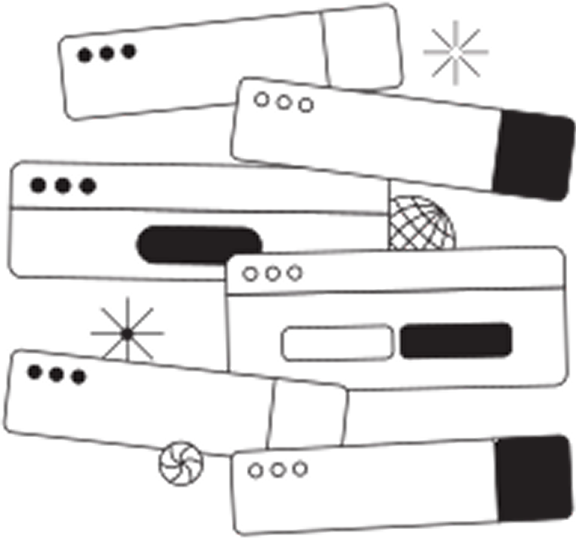
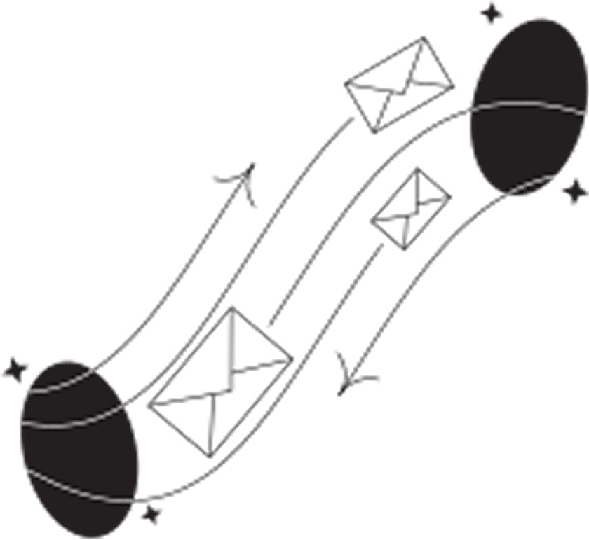

Todas (ou quase todas) as vagas de Product Design e UI/UX. Em um só lugar.
Um agregador automatizado e gratuito, construído de designer para designer, focado em centralizar as melhores oportunidades do mercado de produto.
SOBRE O PROJETO
Por que o UXfetch existe?
Procurar oportunidades ou simplesmente acompanhar a movimentação do mercado em dezenas de plataformas de RH diferentes é um processo fragmentado e ineficiente.
Como designer, eu queria uma forma mais inteligente e automatizada de monitorar o cenário de design de produto no Brasil.
Em vez de apenas aceitar o problema, resolvi usar engenharia de design e automação para criar uma solução:
Um minerador que varre a web, limpa o ruído e entrega apenas o que importa para a nossa comunidade.
HOW IT WORKS
Como a mágica acontece?
Nosso algoritmo varre os principais portais de tecnologia, plataformas de RH e agregadores todas as madrugadas.
Esqueça vagas genéricas. O sistema filtra os resultados por palavras-chave estritas (Product Design, UI, UX, Interaction, Design Ops) para garantir relevância.

Em vez de poluir sua rotina, você recebe um resumo limpo, escaneável e com links diretos para aplicação assim que novas vagas surgirem.
